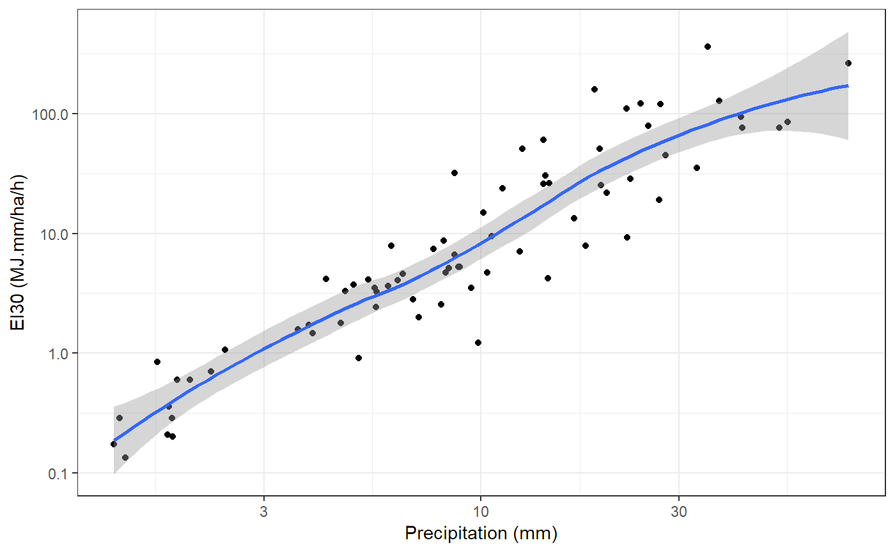

hyetor is an R package that provides a collection of tools that analyze fixed interval precipitation records. It can be used to:
- Aggregate precipitation values.
- Split precipitation time series to independent rainstorms using predefined monthly maximum dry period duration of no precipitation.
- Compile Unitless Cumulative Hyetographs.
- Find maximum rainfall intensities.
- Categorize rainstorms using Huff’s quartile classification.
- Calculate rainfall erosivity values using a number of energy equations.
- Create missing values summaries.
For more details checkout the package’s website and the vignettes:
-
An introduction to
hyetorwith details about the package’s functions. - Rainfall erosivity calculation with details about the rainfall erosivity, kinetic energy equations and classification of erosive events.
Using hyetor
The functions that are provided by hyetor are:
- Functions that can be used to preprocess precipitation time-series:
hyet_create,hyet_fill,hyet_aggregateandhyet_split. - Functions that analyze precipitation time-series:
hyet_erosivity,hyet_intensities,hyet_missingandhyet_uch.
The data sets that are provided by hyetor are:
-
prec5min, time series that comes from the weather station ‘Arna’ in Greece. The owner of that weather station is the Ministry of Environment and Energy. The time series period is from 12/1954 to 05/1956 and the time-step is 5 minutes.
Example
This is a minimal example which shows how to use the package’s functions to fill the internall precipitation timeseries, prec5min, and compute rainfall erosivity values.
library(hyetor)
library(ggplot2)
library(tibble)
ei_values <- prec5min %>%
hyet_fill(time_step = 5, ts_unit = "mins") %>%
hyet_erosivity(time_step = 5)Let’s create a plot with erosivity values and total precipitation height.
ei_values %>%
ggplot(aes(x = cum_prec, y = erosivity)) +
geom_point() +
geom_smooth(method = "loess") +
scale_x_log10("Precipitation (mm)") +
scale_y_log10("EI30 (MJ.mm/ha/h)") +
theme_bw()
Meta
- Bug reports, suggestions, and code are welcome. Please see Contributing.
- Licence:
- All code is licensed MIT.
- All data are from the public data sources in http://www.hydroscope.gr/.
- To cite
hyetorplease use:
Konstantinos Vantas, (2018). hyetor: R package to analyze fixed interval precipitation time series, URL: https://kvantas.github.io/hyetor/,
DOI:http://doi.org/10.5281/zenodo.1403156A BibTeX entry for LaTeX users is
@Manual{ vantas2018hyetor,
author = {Konstantinos Vantas},
title = {{hyetor}: R package to analyze fixed interval precipitation time series},
doi = {http://doi.org/10.5281/zenodo.1403156},
year = {2018},
note = {R package},
url = {https://kvantas.github.io/hyetor/},
}